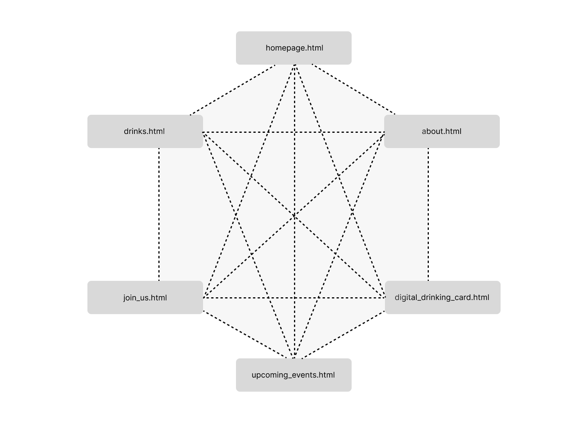
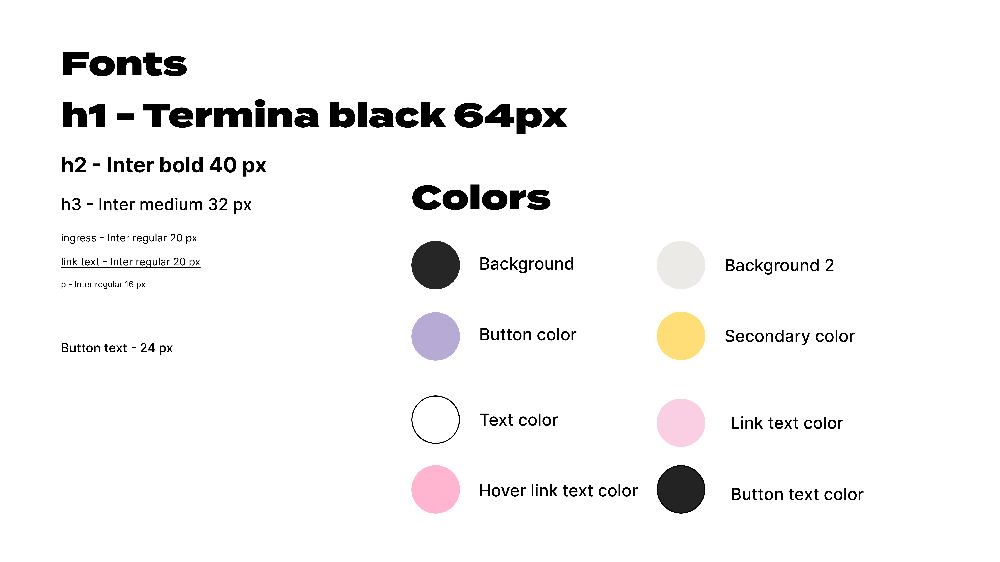
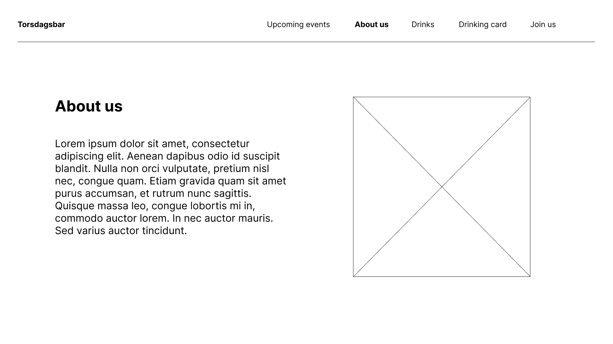
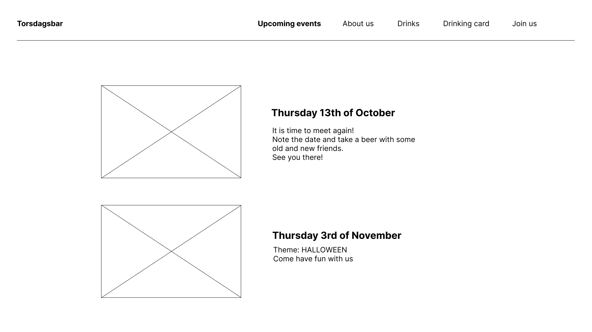
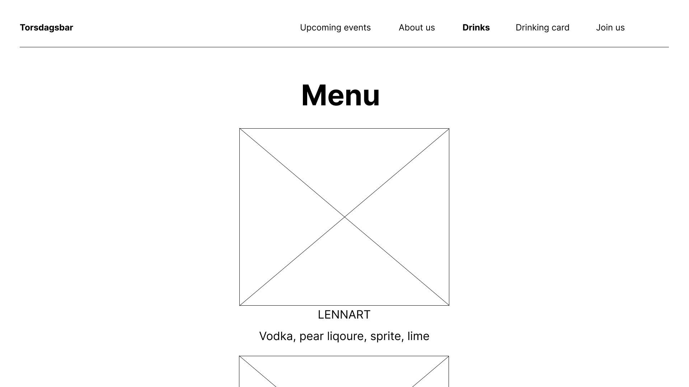
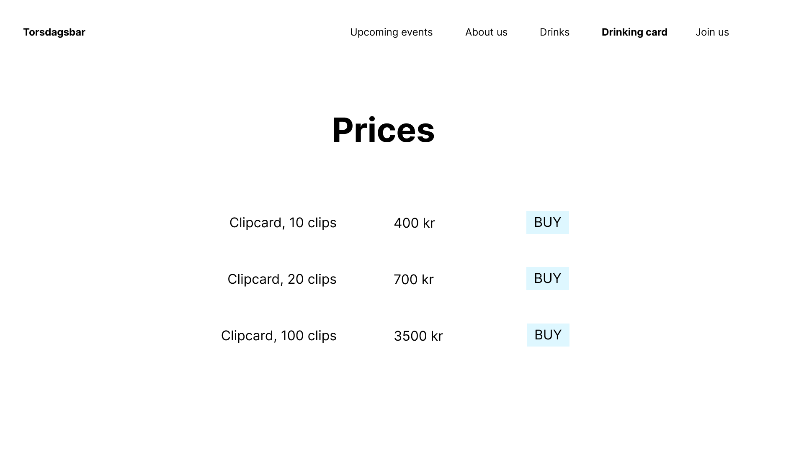
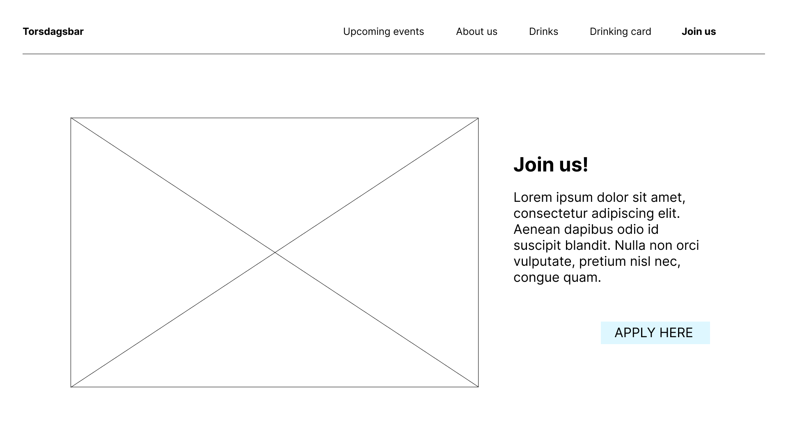

Client name: Torsdagsbar
About: Student organization that arrange parties on Thursdays, hosted by architecture and design students.
The purpose of the website is to give all the information you need about Torsdagsbar. The webpage is supposed to wake interest for the events - this will be achieved by having a well structured page for upcoming and previous events. We will also try to attract our target group by having an appealing UI to summon those design-geeks. We want to make it easy for anyone who is interested in the events to find out when, where and what to meet up for! Our goal is that every student from architecture and industrial design knows what torsdagsbar is because of our amazing website! The intended audience is architecture and design students who are interested in getting to know people from different fields of study. These students are creative people who expect the website to be nice looking and well organized, and include inspiring and playful events. They need quick access to see what events are up next, buy drink vouchers, and sign up to the group.
The homepage is the start page, and from the homepage, you can navigate to all the other pages. All the pages are linked together, so the user can reach all the different pages from every page through the navbar. We chose to have this kind of navigation system because it makes the most sense with the kind of webpage we are going to create. All the sites are equally important, and there are no subpages within a page.
Our website design fulfills the goals we have set for it in terms of wanted aesthetics, accessibility in navigation and hierikary of information in color choice. We hope to attract the audience we want with this design, having a sleek approach with the background color, the bold pop-colors and funky title font.
The navbar is at the top of the page to make it easy to find for the user. It contains links to all the other sites and will be shown at all sites to make it easier to navigate through the different sites.
The footes contain an icon with a link to Torsdagsbar’s instagram where the user can find more content of Torsagsbar.
This page will contain information about Torsdagsbar and the people behind it. It should interest the reader and give a good impression of the work they do. After reading this page the user should want to click further to the “Join us” page.
On this page we will place a picture of the group that is running the bar. We want the picture to take up a lot of space on the page to set the mood. In addition, we will add a textbox with a short description about the bar. The navbar will as always be at the top of the site.
On this page you will get an overview of all the upcoming events arranged by torsdagsbar. Read about every event and get stoked to meet friends and other students at Skiboli. You can find information about what time and all other relevant information about the events.
We will make different “boxes” for the different events coming up. This is so that the users can easily see the different events. The navbar will as always be at the top of the site.
This page will show the variety of drinks you can get at Torsdagsbar. It will be shown as a menu with a picture and a description of the different drinks that they offer.
On this side we use a centered design to present the drinks. The drinks are shown vertically to narrow the attention of the user to one drink at one time. At first the user can see one drink, its name and a description, but they can also see a sneekpeek of the next drink to make the user want to scroll down to see more. Here we use the “below-the-fold principle”.
On this page the user will be able to buy a digital drinking card. The user writes their name and telephone number in two input boxes, and chooses the amount they want to pay for. When the user clicks on the “buy” button, the user will be asked to open Vipps to finish the payment.
On this page we have an overview of the different clipcards with the prices and a buy button. Here we use a very simple design to give the user a clear overview of the different choices.
A page where students can send their interest to join the group, by typing in their contact-info, aka a “get in touch”-page that sends an email directly to the leader of torsdagsbar. Can also include a little text about what it means to join the group and what you would do as a member of the organization.
On this page we also want a big picture of the people in Torsdagsbar and some small text about joining Torsdagsbar. The picture is meant to set the mood and make people want to join Torsdagsbar.
We plan to fulfill the minimum requirements of JavaScript by including these four applications.
We want an image carousel where the user can scroll through pictures from Torsdagsbar. Ane will be in charge of implementing this effect.
We want to make an animation with a glass that is being filled up. The animation will show up while loading the page. We will combine svg and javascript to make the animation. Solveig and Mathilde will be in charge of implementing this effect.
We want to have a box that shows the next event, depending on what date it is. Julie will be in charge of implementing this effect.
We want to add an animation effect on some of the headings. Either while hovering or when you click into a new page. Anna will be in charge of implementing this effect.
The following files will be included in a folder «Torsagsbar», which will be coded further on in this project. The table shows brief descriptions of the files, who’s in charge and deadlines.
On NTNUs server - mathilwb.folk.ntnu.no